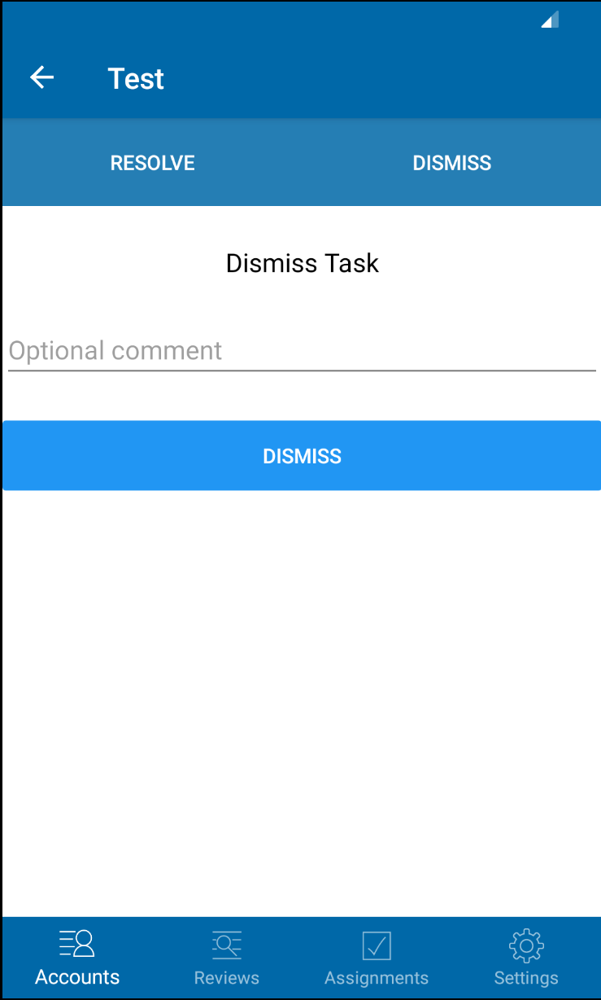
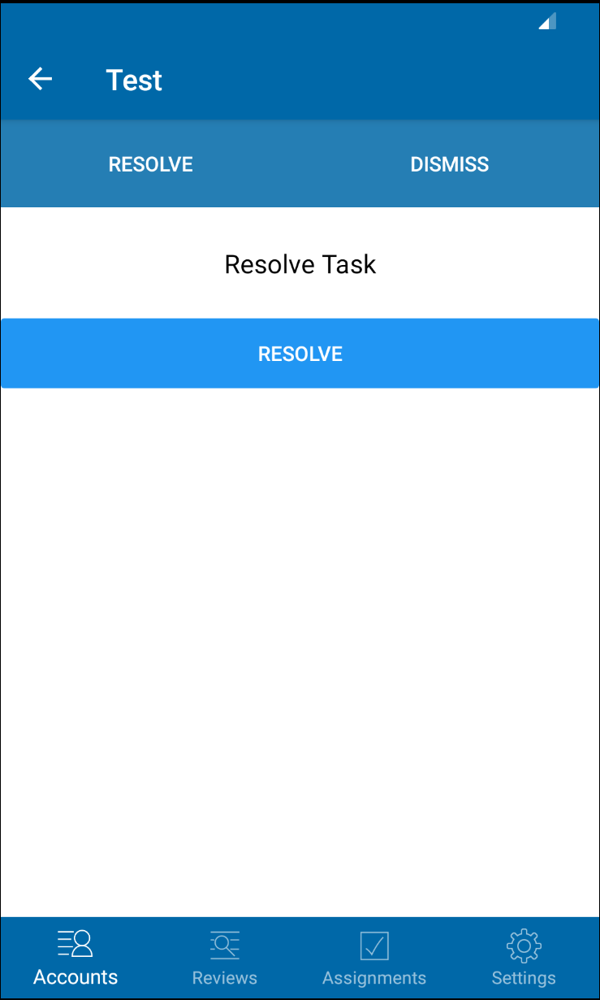
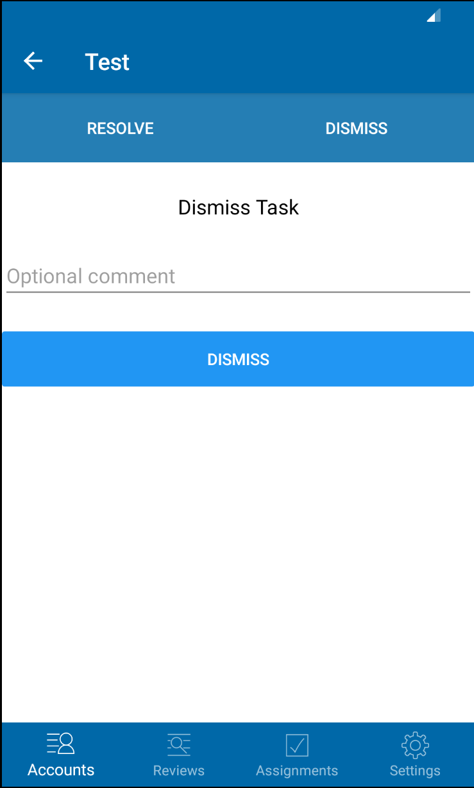
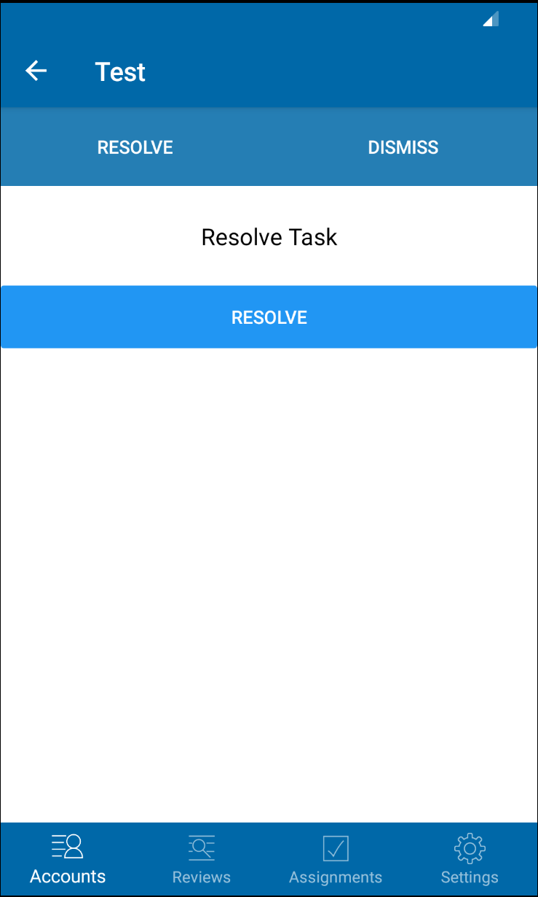

Michael Keen
Researcher
Software Engineer
Profile
Hello! I am an ambitious and motivated researcher/software engineer. I am primarily interested in researching areas related to cybersecurity and privacy. I also have experience developing in C#/.NET, Xamarin, native Android applications, and web technologies.
Project Experience
Undergraduate Capstone Project
Android/iOS application built with C#/.NET framework and Xamarin mobile platform for Accutech Systems administrators. My roles for this project included writing unit tests and user interface tests, creating mechanisms to fetch and send account information to and from the Accutech API, and rendering the information in a user friendly format (shown in screenshots). I also implemented a pagination system to prevent the application from caching too much data at once. Project's GitHub repository can be viewed here.
Screenshots

 



CS4MS+ Website
Website that uses HTML/CSS and PHP; developed/maintained for the Computer Science for Muncie Schools (CS4MS+) initiative at Ball State University. My role consisted of maintaining and modularizing the backend code, while also adding more standards/resource pages to the website. The public website can be viewed here and the GitHub repository here.
Portfolio Website
My personal portfolio website, built with HTML, CSS, and React.js; it is currently still under development. When complete, the site will host my professional information, including my experience, my contact information, and a short personal biography. The site is hosted on Amazon Web Services using the Amplify console; in the future, I'm also planning to create a backend for it using AWS Lambda and Node.js. The GitHub repository can be viewed here and the public website here.
Bug Resolution Website
Final project for a web programming class that uses HTML, PHP, and MySQL; implements a bug resolution system where a "tester" user creates an entry for a bug, a "manager" assigns a bug to a "developer", and the "developer" writes a comment detailing the solution. Source code for completed project can be viewed here.
TLS/SSL Research Project
Research project completed for an undergraduate network security class. The project discussed the mechanisms of TLS/SSL and explores several current and past problems, such as Heartbleed, renegotiation security, and client impersonation attacks. Completed research paper can be viewed here.
Tor Network Research Project
Research initiative in collaboration with Dr. Xin Sun at Ball State University. Research centers around the Tor network, specifically performance issues that prevent it from scaling to support new users, as well as solutions that can be reached without compromising users' anonymity. Completed research paper can be viewed here.
Technical Skills
- HTML
- CSS
- AWS EC2
- React.js
- JavaScript
- PHP
- AWS Amplify
- Python
- C#/.NET
- Java
- MySQL
- Linux Administration
Job Experience
Ball State University
Teaching Assistant
2018-2021
Helped the class instructor to teach the material to the students, assisted students who found themselves struggling, and held several office hour sessions throughout the school week. Classes taught concepts involving discrete mathematics, Python, Java, and computer networking/distributed systems.
Taco Bell
Crew member
2016-2020
Assisted customers with orders, prepared food and drinks, operated the drive-thru, and helped to clean the kitchen and lobby. Also assisted managers in the closing and opening shifts on occasion.
Volunteering
CS4MS+
Program at Ball State University that seeks to expose public school students to computer science, especially females and minorities; participation involved engaging with teachers, students, and maintaining website.
Fair Haven Foundation
Organization that provides housing for out-of-state cancer patients in Indianapolis. Participation involved providing manual labor during fundraising events and setting up technical equipment, such as Square point-of-sale stations for donations.
Hobbies
When I'm not busy with school or work, I like to strengthen my web programming skills and learn about cybersecurity/privacy. I enjoy reading almost anything computer science, history, science in general, or Stephen King. I also like having a good time with my friends and enjoying the small moments in life.